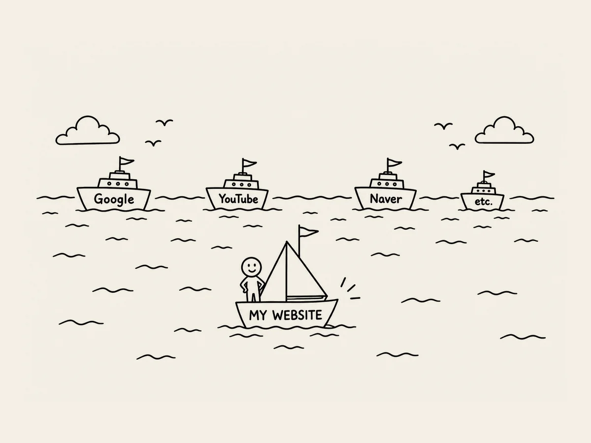

4.
근데 웹이 뭐야?
나는 아직 웹이 뭔지 모른다.
웹이 뭐야?
웹 사이트를 만들겠다고 마음먹었는데 정작 나는 ‘웹’이 뭔지 몰랐다.
인터넷은 대충 뭔지 안다.
유튜브도 매일 본다.
구글도 쓴다.
그런데 웹은 뭐지?
인터넷과 웹은 같은 건가?
웹 사이트의 ‘웹’이 그 웹인가?
AI에게 물었다.
“웹이 뭐야?”
설명을 들었다.
서버가 어떻고, 브라우저가 어떻고, HTML이 어떻고….
또 모르는 말이 나온다.
“잠깐만. 아주 쉽게.”
다시 설명한다.
대충 알겠다.
인터넷이라는 바다에
내 배 하나 띄우는 거구나.
뭐, 그 정도 알면 됐지.
